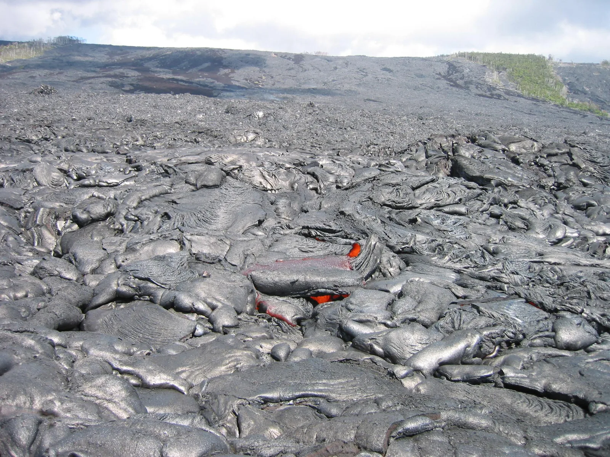

Electromagnetic radiation and the black-body spectrum
Why does an iron bar heated in a forge glow first red and then more and more yellow, and why can a thermal camera see a person even in pitch darkness?
Prior knowledge
- A wave travels one wavelength during one period, and $v = f\lambda$chapter Mechanical waves
- A changing magnetic flux induces a voltagechapter Electromagnetic induction
- All bodies emit thermal radiation, and a hotter body radiates morechapter Heat transfer, energy balance and climate change
Core path: follow the steps in order. Tasks marked Optional give extra practice. Optional tasks: 4.
Think about it
An iron bar heated in a blacksmith's forge does not glow at all at first, even though it is already burning hot. Then it begins to glow dark red, and as it gets hotter it turns orange, yellow and almost white. A bar at room temperature does not glow, but a thermal camera can see it, and you, even in pitch darkness.
Why does the colour of the glow change with temperature, and what does a thermal camera see that the eye cannot?
Optional Recap: frequency and wavelength of a wave
Predict
Make your predictions before investigating 2 questions
Prediction 1: a hotter body
Prediction 2: a body at room temperature
Investigate
The picture shows a body being heated and the spectrum of the radiation it emits. Change the temperature and watch how the curve, its peak and the colour of the glow change.
Simulation
How to use
Adjust the surface temperature $T$ of the body. The graph shows the radiated power as a function of wavelength, and the orange dot and the dashed line show the wavelength of the peak $\lambda_\text{max}$. The colour band is visible light. Choose the Wavelength range: short wavelengths show the interval $0$–$3000\,\text{nm}$, long wavelengths the interval $0$–$30\,\mu\text{m}$. If the peak is outside the range, an arrow at the right edge shows its direction. The scale of the vertical axis changes with the curve, so also follow the numbers on the scale. In the Readings row you see the wavelength of the peak, the share of visible light and the colour of the glow.
Assumptions of the model
The body is a black body: it absorbs all radiation that falls on it, and its spectrum depends only on the surface temperature. Radiation coming from the surroundings and reflected radiation are not included. The colour of the glow is calculated from the spectrum with a model of colour vision of the eye, and the name of the colour is approximate: in the dark the glow is visible from about $800\,\text{K}$ upwards. The readings are values calculated by the model, not measurements.
How the calculation works
The curve is the spectrum of black-body radiation calculated from Planck's radiation law. The quantity $M_\lambda$ on the vertical axis is the power radiated per unit area and wavelength interval. The simulation finds the highest point of the curve and reports its wavelength $\lambda_\text{max}$. The share of visible light is the power radiated between the wavelengths $380\,\text{nm}$ and $750\,\text{nm}$ divided by the total radiated power. The Celsius temperature is $t = T - 273.15\,\text{K}$.
Experiment 1: position of the peak and temperature
Test prediction 1. The wavelength range is short wavelengths; change only the temperature. Record at least the temperatures $3000\,\text{K}$, $4500\,\text{K}$ and $6000\,\text{K}$, and others if you like. Calculate the product $\lambda_\text{max} T$ for each row.
Initial state: surface temperature = $3000\,\text{K}$, wavelength range: short wavelengths. Kept constant: wavelength range. Varied: surface temperature.
| surface temperature | $\lambda _\text{max}$ $(\text{nm})$ |
|---|
Experiment 2: cold bodies
Test prediction 2. The wavelength range is now long wavelengths. Record room temperature $300\,\text{K}$ and at least one temperature between $600$ and $900\,\text{K}$. In the Readings row also look at the share of visible light and the colour of the glow.
Initial state: surface temperature = $300\,\text{K}$, wavelength range: long wavelengths. Kept constant: wavelength range. Varied: surface temperature.
| surface temperature | $\lambda _\text{max}$ $(\text{nm})$ |
|---|
Conclusion: the peak and the temperature
Write, based on your tables: how does the wavelength of the peak of the spectrum change when the temperature doubles? What do you notice about the result $\lambda_\text{max} T$? In which wavelength region is the peak of a body at room temperature, and why does the body not glow?
Model answer
When the temperature doubles from $3000\,\text{K}$ to $6000\,\text{K}$, the peak shifts from $966\,\text{nm}$ to $483\,\text{nm}$, that is, it is halved. The product $\lambda_\text{max} T$ is the same in every row, about $2.90 \cdot 10^{6}\,\text{nm} \cdot \text{K} = 2.90 \cdot 10^{-3}\,\text{m} \cdot \text{K}$, so the wavelength of the peak is inversely proportional to the absolute temperature. The peak of a body at room temperature ($300\,\text{K}$) is at $9659\,\text{nm}$, that is, at about $9.7\,\mu\text{m}$, in the infrared region, and there is less than $0.01\,\%$ visible light. That is why the body does not glow, even though it radiates. The values are calculated by the model.
Assess your own answer
Tick the points your own answer already contains.
Review the theory summary and practise with the exercises.
Theory summary
Key idea
Changing fields create each other
In the chapter Electromagnetic induction we saw that a changing magnetic flux induces a voltage in a conducting loop. The voltage appears because a changing magnetic field creates an electric field around itself, and this field moves the electrons of the conductor. The reverse is also true: a changing electric field creates a magnetic field. When the electric field changes at some point, it creates a changing magnetic field around it, which in turn creates a changing electric field, and so on. This is how an electromagnetic wave arises, and it travels without a medium, even through a vacuum. Light, radio waves and X-rays are all waves of this kind. Together they are called electromagnetic radiation.
The fields are perpendicular to each other and to the direction of travel
In an electromagnetic wave the electric field $\overline{E}$ and the magnetic field $\overline{B}$ oscillate in step: they are greatest and zero at the same points. The fields are perpendicular to each other, and each is perpendicular to the direction in which the wave travels. So the wave is transverse, like a wave on a rope (chapter Mechanical waves), but no matter oscillates: the fields do. In a vacuum all electromagnetic waves travel at the same speed, the speed of light $c = 3.00 \cdot 10^{8}\,\text{m/s}$. In air the speed is almost the same.
Wavelength and frequency
Like a mechanical wave, an electromagnetic wave travels one wavelength during one period. So the speed of light, the frequency of the wave and its wavelength are related:
$$c = f \lambda$$
where $c$ is the speed of light in a vacuum (m/s), $f$ is the frequency (Hz) and $\lambda$ is the wavelength (m). Since $c$ is the same for all electromagnetic waves, a higher frequency means a shorter wavelength. For example, an FM radio wave of about $100\,\text{MHz}$ has a wavelength of $3.0\,\text{m}$, and a microwave-oven wave of $2.45\,\text{GHz}$ has a wavelength of about $12\,\text{cm}$.
The source: a charge in accelerated motion
A charge at rest has an electric field around it that does not change. The fields of a charge moving in a straight line at constant velocity travel along with it, and it does not radiate. Electromagnetic radiation is produced when a charged particle is in accelerated motion: the change in its field spreads out into the surroundings at the speed of light. In the antenna of a transmitter, an alternating voltage makes electrons oscillate back and forth. The antenna sends out a wave whose frequency is the same as the frequency of the alternating current (chapter The generator and alternating current). A mobile phone and the base station of a wireless network work in the same way. In the antenna of a receiver, the electric field of the incoming wave moves electrons, and a weak alternating current appears in the antenna.
The electromagnetic spectrum
The kinds of electromagnetic radiation differ from one another only in wavelength and frequency. The whole range of radiation arranged by wavelength is called the electromagnetic spectrum. The boundaries between the regions are not sharp; the regions are named according to how the radiation is produced and how it affects matter. The eye sees only a narrow band: the wavelength of red light is about $750\,\text{nm}$ and that of violet about $380\,\text{nm}$.
| Region | Wavelength | Sources and uses |
|---|---|---|
| radio waves | over $1\,\text{m}$ | antenna; radio, television |
| microwaves | $1\,\text{mm}$–$1\,\text{m}$ | antenna; mobile phone, radar, oven |
| infrared | $750\,\text{nm}$–$1\,\text{mm}$ | all bodies; thermal camera |
| visible light | $380$–$750\,\text{nm}$ | the Sun, a glowing body; seeing |
| ultraviolet | $10$–$380\,\text{nm}$ | the Sun; vitamin D, sunburn |
| X-rays | $0.01$–$10\,\text{nm}$ | X-ray tube; X-ray imaging |
| gamma rays | under $0.01\,\text{nm}$ | atomic nuclei; radiotherapy, sterilisation |
Effects of radiation
The effect of radiation depends on its wavelength. Radio waves, microwaves and infrared radiation increase the internal energy of matter: the radiation in a microwave oven makes the water molecules of food turn back and forth, and infrared warms the skin. X-rays and gamma rays, and the shortest-wavelength ultraviolet radiation, are ionising radiation: they can remove electrons from atoms and damage cells. An X-ray tube is also a source of accelerated charge: fast electrons stop in a metal, and their sudden deceleration produces X-rays. X-rays pass through soft tissue better than through bone, so bones show up in the image.

All bodies radiate
The particles of matter are in constant thermal motion, and their charges are in accelerated motion. So every body emits electromagnetic radiation, called thermal radiation (chapter Heat transfer, energy balance and climate change). The radiation contains all wavelengths, which means its spectrum is continuous. A body at room temperature radiates almost only infrared, which the eye cannot see. When a body is heated, the radiation becomes stronger and most of it shifts to shorter wavelengths. At a temperature of about $800\,\text{K}$ the radiation already contains so much red light that the body glows dark red in the dark. When hotter it glows orange, yellow and finally white.
The black body
A black body is an ideal body that absorbs all radiation that falls on it and reflects none. The spectrum of the radiation it emits depends only on its surface temperature, not on the material the body is made of. This radiation is called black-body radiation. A hot black body does not look black, because it radiates by itself. The Sun radiates approximately like a black body, as do a glowing ember and, in the infrared region, human skin. Shiny metal reflects a large part of the radiation that falls on it, and at the same temperature it also radiates less than a black body.
Wien's displacement law
The peak of a black-body spectrum, that is, the wavelength at which the body radiates most strongly, is shorter the hotter the body is. The wavelength of the peak is inversely proportional to the absolute temperature of the body:
$$\lambda_\text{max} T = b$$
where $\lambda_\text{max}$ is the wavelength of the peak of the spectrum (m), $T$ is the surface temperature of the body (K) and $b = 2.898 \cdot 10^{-3}\,\text{m} \cdot \text{K}$ is the constant of Wien's displacement law. The temperature must be the absolute temperature, so a temperature given in degrees Celsius is first converted to kelvins by adding $273.15\,\text{K}$. When the absolute temperature doubles, the wavelength of the peak is halved. The law applies to a black body, and to real bodies such as the Sun and an ember it applies approximately.
The peak tells the temperature
The peak of the spectrum of a body at room temperature ($300\,\text{K}$) is at about $9.7\,\mu\text{m}$, and that of human skin ($34\,{}^\circ\text{C}$, that is $307\,\text{K}$) at about $9.4\,\mu\text{m}$, deep in the infrared region. A thermal camera measures radiation at wavelengths of about $8$–$14\,\mu\text{m}$ and turns it into an image. That is why it sees a person even in the dark: the person does not need light to be visible to the camera, because the person radiates by themselves. For a body glowing dark red, at about $800\,\text{K}$, the peak is still in the infrared region, at about $3.6\,\mu\text{m}$, and the eye sees only the short-wavelength edge of the spectrum. The peak of the radiation from the Sun is at about $500\,\text{nm}$ (more precisely $502\,\text{nm}$), in the middle of visible light.
Radiated power rises steeply
A hotter black body radiates more at every wavelength than a cooler one, so its spectrum curve lies entirely above the curve of the cooler body. The total power radiated per unit area is proportional to the fourth power of the absolute temperature (the Stefan–Boltzmann law). When the temperature doubles, every square metre radiates $16$ times the power. That is why glowing iron warms your face from metres away. Why the spectrum curve has exactly this shape is explained only by quantum physics in the course Matter, radiation and quantisation.
Common misconception
Many people think that radiation always means radioactive or dangerous radiation. Radio waves, light and thermal radiation are also electromagnetic radiation, and only the shortest-wavelength part of the spectrum is ionising. Another mistake is to think that cold bodies do not radiate at all. Every body radiates, but a body at room temperature radiates infrared, which the eye cannot see. A third mistake is to substitute the temperature in degrees Celsius into Wien's displacement law. The law requires the absolute temperature: $900\,{}^\circ\text{C}$ is $1173\,\text{K}$, and the peak is at $2.47\,\mu\text{m}$, not at $3.22\,\mu\text{m}$. A fourth mistake is to conclude that the Sun is green because the peak is at green light. The spectrum is broad, and the combination of all colours looks white to the eye.
Summary
- In an electromagnetic wave the changing electric and magnetic fields create each other. The fields are perpendicular to each other and to the direction of travel, and in a vacuum the wave travels at the speed $c = 3.00 \cdot 10^{8}\,\text{m/s}$.
- The speed of light, the frequency and the wavelength are related: $c = f\lambda$. The regions of the spectrum, from radio waves to gamma rays, differ only in wavelength.
- Radiation is produced when a charged particle is in accelerated motion, like the electrons of an antenna or the particles in the thermal motion of a hot body.
- The spectrum of black-body radiation is continuous and depends only on the surface temperature. According to Wien's displacement law $\lambda_\text{max} T = b$, the peak of a hotter body is at a shorter wavelength, and the temperature is in kelvins.
Optional Return to your predictions
Compare your predictions with the theory and the values of the model. Then return to the opening question: why does heated iron glow first red and then yellow, and what does a thermal camera see?
Would you change your prediction?
Apply
Worked example
Problem
Assume that the Sun radiates like a black body. The peak of its spectrum is at the wavelength $502\,\text{nm}$. What is the surface temperature of the Sun?
Step 1/7
Given and find. The wavelength of the peak of the spectrum is $\lambda_\text{max} = 502\,\text{nm}$ and the constant of Wien's displacement law is $b = 2.898 \cdot 10^{-3}\,\text{m} \cdot \text{K}$. We are asked for the surface temperature $T$ of the Sun in kelvins.
Step 2/7
Principle. The wavelength of the peak of a black-body spectrum depends only on the surface temperature, so the temperature can be calculated from the position of the peak with Wien's displacement law. The law fits because the Sun is assumed to radiate like a black body.
Step 3/7
Formula solved.
$$\begin{aligned} \lambda_\text{max} T &= b \\ T &= \frac{b}{\lambda_\text{max}} \end{aligned}$$
Step 4/7
Unit conversions. The constant $b$ contains metres, so the wavelength is converted to metres:
Step 5/7
Substitution. $$\begin{aligned} T &= \frac{b}{\lambda_\text{max}} \\ &= \frac{2.898 \cdot 10^{-3}\,\text{m} \cdot \text{K}}{502 \cdot 10^{-9}\,\text{m}} \\ &= 5773\,\text{K} \end{aligned}$$
Step 6/7
Result. The surface temperature of the Sun is $T \approx 5.77 \cdot 10^{3}\,\text{K}$. The result is given to three significant figures, like the wavelength $502\,\text{nm}$.
Step 7/7
Reasonableness. The International Astronomical Union (IAU) has confirmed the nominal surface temperature of the Sun as $5772\,\text{K}$ (IAU 2015), so the result agrees with it. The temperature is also much higher than the about $800\,\text{K}$ of iron glowing dark red, as it should be, because the peak of the Sun is in the region of visible light and not in the infrared.
Optional Find the error
Apply to a new situation: the incandescent lamp
The tungsten filament of an old-fashioned incandescent lamp is at a temperature of about $2430\,{}^\circ\text{C}$. Assume that the filament radiates like a black body.
At what wavelength is the peak of its spectrum? Give the answer in nanometres.
Hint 1: a guiding question
Which law gives the position of the peak of the spectrum when the temperature is known, and in what unit must the temperature be?
Hint 2: what is the connection
Wien's displacement law $\lambda_\text{max} = b : T$, where $T$ is in kelvins.
Hint 3: an intermediate step
so
Show the solution
Given
temperature of the filament $t = 2430\,{}^\circ\text{C}$, constant of Wien's displacement law $b = 2.898 \cdot 10^{-3}\,\text{m} \cdot \text{K}$; the filament is assumed to be a black body
Find
wavelength of the peak of the spectrum $\lambda_\text{max}$ in nanometres
Principle
A hot tungsten filament radiates approximately like a black body, whose spectrum peak depends only on the temperature. Wien's displacement law $\lambda_\text{max} T = b$ gives the peak when the temperature is absolute, that is, in kelvins.
Formula
$\lambda_\text{max} T = b$, so $\lambda_\text{max} = \dfrac{b}{T}$
Conversions
Finally $1\,\text{m} = 10^{9}\,\text{nm}$.
Substitution
Answer
$1.07 \cdot 10^{3}\,\text{nm}$
Three significant figures like the temperature $2430\,{}^\circ\text{C}$.
Reasonableness
The peak is at a longer wavelength than the $750\,\text{nm}$ limit of red light, that is, in the infrared region, so most of the radiation of the lamp is infrared. That is why an incandescent lamp gets warm and produces light with poor efficiency. The result lies between the $502\,\text{nm}$ peak of the Sun and the $9.7\,\mu\text{m}$ peak of a body at room temperature, as the temperature also implies.
Check your understanding
Exit ticket
Answer on your own first and only then open the answer.
- Arrange in order of wavelength from the longest to the shortest: visible light, radio waves, X-rays and infrared radiation.
Answer
Radio waves, infrared radiation, visible light, X-rays. The frequency increases in the same order, because $c = f\lambda$ is the same for all.
- The absolute temperature of a black body triples. How does the wavelength of the peak of its spectrum change?
Answer
It decreases to a third, because $\lambda_\text{max} T = b$ is constant: the wavelength of the peak is inversely proportional to the absolute temperature.
1. Concept: a source of radiation
2. Calculate: the temperature of lava
The peak of the spectrum of the radiation from glowing lava flowing from a volcano is at the wavelength $2.1\,\mu\text{m}$. Assume that the lava radiates like a black body.
How hot is the lava? Give the answer in degrees Celsius.
Hint 1: a guiding question
Which law connects the peak of the spectrum and the temperature, and in what unit does it give the temperature?
Hint 2: what is the connection
From Wien's displacement law $T = b : \lambda_\text{max}$ in kelvins, and degrees Celsius are obtained by subtracting $273.15\,\text{K}$ from it.
Hint 3: an intermediate step
Show the solution
Given
wavelength of the peak of the spectrum of the lava $\lambda_\text{max} = 2.1\,\mu\text{m}$, constant of Wien's displacement law $b = 2.898 \cdot 10^{-3}\,\text{m} \cdot \text{K}$; the lava is assumed to be a black body
Find
surface temperature of the lava $t$ in degrees Celsius
Principle
Glowing lava radiates approximately like a black body, so the position of the peak of its spectrum depends only on the surface temperature. Wien's displacement law gives the absolute temperature, which is finally converted to degrees Celsius.
Formula
$\lambda_\text{max} T = b$, so $T = \dfrac{b}{\lambda_\text{max}}$, and $t = T - 273.15\,\text{K}$ in degrees Celsius
Conversions
Finally $273.15\,\text{K}$ is subtracted from the kelvins to get degrees Celsius.
Substitution
so
Answer
$1.1 \cdot 10^{3}\,{}^\circ\text{C}$
Two significant figures like the wavelength $2.1\,\mu\text{m}$.
Reasonableness
The peak is in the infrared region, but the eye sees the short-wavelength edge of the spectrum, and the lava glows orange. The temperature is of the same order of magnitude as that of molten rock, about a thousand degrees Celsius, and much lower than the $5772\,\text{K}$ of the surface of the Sun, as it should be.
Suggestion: one answer does not show everything you can do, but review the theory summary and do the core exercises.
Optional 3. Explain: the Sun and a person
Explain why the peak of the spectrum of the radiation from the Sun is in the region of visible light but the peak of the radiation from the human body is in the infrared region. Also explain why a thermal camera sees a person in the dark even though the eye does not.
Model answer
Both the Sun and human skin radiate approximately like a black body, whose spectrum depends only on the surface temperature. According to Wien's displacement law $\lambda_\text{max} T = b$, the wavelength of the peak is inversely proportional to the absolute temperature. The surface of the Sun is at about $5800\,\text{K}$, so the peak is at about $500\,\text{nm}$, in the region of visible light. The skin is at about $307\,\text{K}$, about $19$ times colder, so the peak is at a wavelength about $19$ times longer, at about $9.4\,\mu\text{m}$ in the infrared region. So a person radiates by themselves, even in the dark, but almost all the radiation is infrared, which the eye does not detect. A thermal camera measures infrared radiation at wavelengths of about $8$–$14\,\mu\text{m}$, so it sees a person without light.
Assess your own answer
Tick the points your own answer already contains.
Review the theory summary and practise with the exercises.
Review the chapter's concepts
Cards you mark Review later collect in your review deck.
- Electromagnetic wave
- A travelling oscillation of electric and magnetic fields that needs no medium.
- Speed of light
- The speed of electromagnetic radiation in a vacuum.$$c \approx 3.00 \cdot 10^{8}\,\text{m/s}$$
Exercises
Level 1 · basic practice 5 exercises
One formula or one step of reasoning. Core exercises first, the rest is extra practice.
- Exercise 9-1Core
An FM radio channel transmits at the frequency $94.0\,\text{MHz}$. What is the wavelength of the radio wave? The speed of a radio wave in air is $c = 3.00 \cdot 10^{8}\,\text{m/s}$.
Answer
$3.19\,\text{m}$
Show the solution
Given
frequency of the radio wave $f = 94.0\,\text{MHz}$, speed of the wave $c = 3.00 \cdot 10^{8}\,\text{m/s}$
Find
wavelength $\lambda$ in metres
Principle
A radio wave is an electromagnetic wave, which travels one wavelength during one period. So the speed, frequency and wavelength are related by $c = f\lambda$.
Formula
$c = f\lambda$, so $\lambda = \dfrac{c}{f}$
Conversions
$f$$= 94.0\,\text{MHz}$$= 94.0 \cdot 10^{6}\,\text{Hz}$Substitution
$\lambda$$= \dfrac{3.00 \cdot 10^{8}\,\text{m/s}}{94.0 \cdot 10^{6}\,\text{Hz}}$$= 3.191\,\text{m}$Answer
$3.19\,\text{m}$
Three significant figures like the frequency $94.0\,\text{MHz}$.
Reasonableness
Units:
$\tfrac{\text{m/s}}{\text{Hz}}$$= \tfrac{\text{m/s}}{1/\text{s}}$$= \text{m}$The wavelength at about $100\,\text{MHz}$ in FM radio is about $3\,\text{m}$, and a slightly lower frequency gives a slightly longer wave. The value is over a metre, as it should be for radio waves.
- Exercise 9-2Core
A microwave oven heats food with microwaves whose frequency is $2.45\,\text{GHz}$. What is the wavelength of the microwaves? Give the answer in centimetres.
Answer
$12.2\,\text{cm}$
Show the solution
Given
frequency of the microwaves $f = 2.45\,\text{GHz}$, speed of light $c = 3.00 \cdot 10^{8}\,\text{m/s}$
Find
wavelength $\lambda$ in centimetres
Principle
Microwaves are electromagnetic radiation, which travels at the speed of light. The wave travels one wavelength during one period, so $c = f\lambda$.
Formula
$c = f\lambda$, so $\lambda = \dfrac{c}{f}$
Conversions
$f$$= 2.45\,\text{GHz}$$= 2.45 \cdot 10^{9}\,\text{Hz}$Finally $1\,\text{m} = 100\,\text{cm}$.
Substitution
$\lambda$$= \dfrac{3.00 \cdot 10^{8}\,\text{m/s}}{2.45 \cdot 10^{9}\,\text{Hz}}$$= 0.1224\,\text{m}$$= 0.1224 \cdot 100\,\text{cm}$$= 12.24\,\text{cm}$Answer
$12.2\,\text{cm}$
Three significant figures like the frequency $2.45\,\text{GHz}$.
Reasonableness
The wavelength is between a millimetre and a metre, that is, in the region of microwaves.
- Exercise 9-3
The surface temperature of human skin is $307\,\text{K}$.
At what wavelength is the peak of the spectrum of the thermal radiation emitted by the skin, when the skin is assumed to be a black body? Give the answer in micrometres.
Answer
$9.44\,\mu\text{m}$
Show the solution
Given
surface temperature of the skin $T = 307\,\text{K}$, constant of Wien's displacement law $b = 2.898 \cdot 10^{-3}\,\text{m} \cdot \text{K}$; the skin is assumed to be a black body
Find
wavelength of the peak of the spectrum $\lambda_\text{max}$ in micrometres
Principle
The position of the peak of a black-body spectrum depends only on the surface temperature. Wien's displacement law fits because skin radiates approximately like a black body in the infrared region and the temperature is given in kelvins.
Formula
$\lambda_\text{max} T = b$, so $\lambda_\text{max} = \dfrac{b}{T}$
Conversions
The temperature is already in kelvins. Finally $1\,\mu\text{m} = 10^{-6}\,\text{m}$.
Substitution
$\lambda_\text{max}$$= \dfrac{2.898 \cdot 10^{-3}\,\text{m} \cdot \text{K}}{307\,\text{K}}$$= 9.440 \cdot 10^{-6}\,\text{m}$$= 9.440\,\mu\text{m}$Answer
$9.44\,\mu\text{m}$
Three significant figures like the temperature $307\,\text{K}$.
Reasonableness
The peak is in the infrared region, far beyond the $750\,\text{nm} = 0.75\,\mu\text{m}$ of visible light, so the skin does not glow. The result is slightly shorter than the $9.7\,\mu\text{m}$ of a body at room temperature, because the skin is slightly warmer.
- Exercise 9-4
The peak of the spectrum of the radiation from a blue-white star is at the wavelength $290\,\text{nm}$.
What is the surface temperature of the star, when the star is assumed to be a black body?
Answer
$1.0 \cdot 10^{4}\,\text{K}$
Show the solution
Given
wavelength of the peak of the spectrum $\lambda_\text{max} = 290\,\text{nm}$, constant of Wien's displacement law $b = 2.898 \cdot 10^{-3}\,\text{m} \cdot \text{K}$; the star is assumed to be a black body
Find
surface temperature of the star $T$ in kelvins
Principle
A star radiates approximately like a black body, whose spectrum peak depends only on the surface temperature. So the temperature can be solved from Wien's displacement law when the peak is known.
Formula
$\lambda_\text{max} T = b$, so $T = \dfrac{b}{\lambda_\text{max}}$
Conversions
$\lambda_\text{max}$$= 290\,\text{nm}$$= 290 \cdot 10^{-9}\,\text{m}$Substitution
$T$$= \dfrac{2.898 \cdot 10^{-3}\,\text{m} \cdot \text{K}}{290 \cdot 10^{-9}\,\text{m}}$$= 9993\,\text{K}$Answer
$1.0 \cdot 10^{4}\,\text{K}$
Two significant figures like the wavelength $290\,\text{nm}$.
Reasonableness
The peak is in the ultraviolet region, at a shorter wavelength than the $502\,\text{nm}$ of the Sun, so the star must be hotter than the Sun: $5772\,\text{K} \cdot 502 : 290 \approx 10\,000\,\text{K}$. Such a star looks bluish white.
- Exercise 9-5
The wavelength of the light from a green laser pointer is $532\,\text{nm}$. What is the frequency of the light? Give the answer in terahertz ($1\,\text{THz} = 10^{12}\,\text{Hz}$).
Answer
$564\,\text{THz}$
Show the solution
Given
wavelength of the light $\lambda = 532\,\text{nm}$, speed of light $c = 3.00 \cdot 10^{8}\,\text{m/s}$
Find
frequency of the light $f$ in terahertz
Principle
Light is an electromagnetic wave, which travels one wavelength during one period, so $c = f\lambda$. In air the speed of light is almost the same as in a vacuum.
Formula
$c = f\lambda$, so $f = \dfrac{c}{\lambda}$
Conversions
$\lambda$$= 532\,\text{nm}$$= 532 \cdot 10^{-9}\,\text{m}$Finally $1\,\text{THz} = 10^{12}\,\text{Hz}$.
Substitution
$f$$= \dfrac{3.00 \cdot 10^{8}\,\text{m/s}}{532 \cdot 10^{-9}\,\text{m}}$$= 5.639 \cdot 10^{14}\,\text{Hz}$$= 563.9\,\text{THz}$Answer
$564\,\text{THz}$
That is $5.64 \cdot 10^{14}\,\text{Hz}$, three significant figures like the wavelength $532\,\text{nm}$.
Reasonableness
The frequencies of visible light are between about $4.0 \cdot 10^{14}\,\text{Hz}$ (red, $750\,\text{nm}$) and $7.9 \cdot 10^{14}\,\text{Hz}$ (violet, $380\,\text{nm}$), and green light lies between them. Units:
$\tfrac{\text{m/s}}{\text{m}}$$= \tfrac{1}{\text{s}}$$= \text{Hz}$
Level 2 · applied practice 4 exercises
Two steps, working with measured data, a unit conversion or rearranging a formula. Core exercises first, the rest is extra practice.
- Exercise 9-6Core
The temperature of the inner surface of the vault of a wood-fired pizza oven is $450\,{}^\circ\text{C}$.
At what wavelength is the peak of the spectrum of the radiation emitted by the vault, when the vault is assumed to be a black body? Give the answer in micrometres.
Answer
$4.01\,\mu\text{m}$
Show the solution
Given
temperature of the vault $t = 450\,{}^\circ\text{C}$, constant of Wien's displacement law $b = 2.898 \cdot 10^{-3}\,\text{m} \cdot \text{K}$; the vault is assumed to be a black body
Find
wavelength of the peak of the spectrum $\lambda_\text{max}$ in micrometres
Principle
The hot vault radiates approximately like a black body, whose spectrum peak depends only on the temperature. In Wien's displacement law the temperature must be absolute, so degrees Celsius are first converted to kelvins.
Formula
$\lambda_\text{max} T = b$, so $\lambda_\text{max} = \dfrac{b}{T}$
Conversions
$T$$= (450 + 273.15)\,\text{K}$$= 723.15\,\text{K}$Finally $1\,\mu\text{m} = 10^{-6}\,\text{m}$.
Substitution
$\lambda_\text{max}$$= \dfrac{2.898 \cdot 10^{-3}\,\text{m} \cdot \text{K}}{723.15\,\text{K}}$$= 4.007 \cdot 10^{-6}\,\text{m}$$= 4.007\,\mu\text{m}$Answer
$4.01\,\mu\text{m}$
Three significant figures like the temperature $450\,{}^\circ\text{C}$, that is $723\,\text{K}$.
Reasonableness
The peak is in the infrared region, so the vault hardly glows: a red glow visible in the dark begins only at about $800\,\text{K}$. The result lies between the $9.7\,\mu\text{m}$ of a body at room temperature and the $3.6\,\mu\text{m}$ of a dark-red glow, as the temperature does too.
- Exercise 9-7Core
The graph shows the spectrum of the radiation emitted by a glowing body. The body radiates like a black body. Determine the surface temperature of the body. Read the value you need from the graph.
Answer
$2.4 \cdot 10^{3}\,\text{K}$
Show the solution
Given
the spectrum curve in the graph; constant of Wien's displacement law $b = 2.898 \cdot 10^{-3}\,\text{m} \cdot \text{K}$; the body radiates like a black body
Find
surface temperature of the body $T$ in kelvins
Principle
The position of the peak of a black-body spectrum depends only on the surface temperature, so the temperature follows from Wien's displacement law once the wavelength of the peak has been read from the graph.
Reading the graph
The highest point of the curve is on the vertical grid line that is one square ($0.2\,\mu\text{m}$) to the right of the value $1$ (the grid lines are $0.2\,\mu\text{m}$ apart), so $\lambda_\text{max} = 1.2\,\mu\text{m}$. The height of the peak is not needed, because the temperature depends only on the position of the peak.
Formula
$\lambda_\text{max} T = b$, so $T = \dfrac{b}{\lambda_\text{max}}$
Conversions
$\lambda_\text{max}$$= 1.2\,\mu\text{m}$$= 1.2 \cdot 10^{-6}\,\text{m}$Substitution
$T$$= \dfrac{2.898 \cdot 10^{-3}\,\text{m} \cdot \text{K}}{1.2 \cdot 10^{-6}\,\text{m}}$$= 2415\,\text{K}$Answer
$2.4 \cdot 10^{3}\,\text{K}$
Two significant figures like the wavelength $1.2\,\mu\text{m}$ read from the graph.
Reasonableness
The peak is in the infrared region but close to visible light, and the curve already rises at the visible wavelengths. So the body glows brightly, and the temperature is of the order of that of the filament of an incandescent lamp, about $2700\,\text{K}$.
- Exercise 9-8
An iron plate is heated from $27\,{}^\circ\text{C}$ to $327\,{}^\circ\text{C}$.
By how many micrometres does the peak of the spectrum of the thermal radiation of the plate shift? The plate is assumed to be a black body.
Answer
$4.83\,\mu\text{m}$
Show the solution
Given
initial temperature $t_1 = 27\,{}^\circ\text{C}$, final temperature $t_2 = 327\,{}^\circ\text{C}$, constant of Wien's displacement law $b = 2.898 \cdot 10^{-3}\,\text{m} \cdot \text{K}$; the plate is assumed to be a black body
Find
shift of the peak of the spectrum $\Delta\lambda = \lambda_1 - \lambda_2$ in micrometres
Principle
According to Wien's displacement law the wavelength of the peak is inversely proportional to the absolute temperature, so on heating the peak shifts to shorter wavelengths. We calculate the peak at both temperatures and take the difference. The difference cannot be found from the temperature difference, because $\lambda_\text{max}$ does not depend linearly on the temperature.
Formula
$\lambda_\text{max} T = b$, so
$\lambda_\text{max}$$= \dfrac{b}{T}$$\Delta\lambda$$= \dfrac{b}{T_1} - \dfrac{b}{T_2}$Conversions
$T_1$$= (27 + 273.15)\,\text{K}$$= 300.15\,\text{K}$$T_2$$= (327 + 273.15)\,\text{K}$$= 600.15\,\text{K}$Finally $1\,\mu\text{m} = 10^{-6}\,\text{m}$.
Substitution
$\Delta\lambda$$= \dfrac{2.898 \cdot 10^{-3}\,\text{m} \cdot \text{K}}{300.15\,\text{K}} - \dfrac{2.898 \cdot 10^{-3}\,\text{m} \cdot \text{K}}{600.15\,\text{K}}$$= 9.655\,\mu\text{m} - 4.829\,\mu\text{m}$$= 4.826\,\mu\text{m}$Answer
$4.83\,\mu\text{m}$
Towards shorter wavelengths, three significant figures, because the temperatures are given to the nearest degree.
Reasonableness
The absolute temperature almost doubles, so the wavelength of the peak almost halves, from about $9.7\,\mu\text{m}$ to about $4.8\,\mu\text{m}$; the shift is therefore about half of the original wavelength. Both peaks are in the infrared region, so the plate does not glow.
- Exercise 9-9
The peak of the spectrum of the radiation from a star is at a wavelength at which the frequency of the light is $6.0 \cdot 10^{14}\,\text{Hz}$.
What is the surface temperature of the star, when the star is assumed to be a black body?
Answer
$5.8 \cdot 10^{3}\,\text{K}$
Show the solution
Given
frequency of the peak of the spectrum $f = 6.0 \cdot 10^{14}\,\text{Hz}$, speed of light $c = 3.00 \cdot 10^{8}\,\text{m/s}$, constant of Wien's displacement law $b = 2.898 \cdot 10^{-3}\,\text{m} \cdot \text{K}$; the star is assumed to be a black body
Find
surface temperature of the star $T$ in kelvins
Principle
Wien's displacement law contains the wavelength of the peak, so first the frequency is converted to a wavelength with $c = f\lambda$, which holds for all electromagnetic radiation. Then the temperature is solved from Wien's displacement law.
Formula
$c = f\lambda_\text{max}$, so $\lambda_\text{max} = \dfrac{c}{f}$, and $\lambda_\text{max} T = b$, so
$T$$= \dfrac{b}{\lambda_\text{max}}$$= \dfrac{b f}{c}$Conversions
Not needed: all quantities are in SI units.
Substitution
$\lambda_\text{max}$$= \dfrac{3.00 \cdot 10^{8}\,\text{m/s}}{6.0 \cdot 10^{14}\,\text{Hz}}$$= 5.0 \cdot 10^{-7}\,\text{m}$$T$$= \dfrac{2.898 \cdot 10^{-3}\,\text{m} \cdot \text{K}}{5.0 \cdot 10^{-7}\,\text{m}}$$= 5796\,\text{K}$Answer
$5.8 \cdot 10^{3}\,\text{K}$
Two significant figures like the frequency $6.0 \cdot 10^{14}\,\text{Hz}$.
Reasonableness
The peak is at $500\,\text{nm}$, in the middle of visible light, as for the Sun, and the temperature is almost the same as the $5772\,\text{K}$ of the surface of the Sun. So the star is similar to the Sun.
Level 3 · challenging 3 exercises
Optional: application, two ideas together or a new situation where you reason for yourself.
- Exercise 9-10
Radiation arrives uniformly from every direction in space, and its spectrum corresponds exactly to black-body radiation at the temperature $2.7255\,\text{K}$ (Fixsen 2009). The radiation originates from the early universe, and it is called the cosmic background radiation.
At what wavelength is the peak of its spectrum? Give the answer in millimetres and deduce which region of the spectrum the radiation belongs to.
Answer
$1.063\,\text{mm}$
Show the solution
Given
temperature of the background radiation $T = 2.7255\,\text{K}$ (Fixsen 2009), constant of Wien's displacement law $b = 2.898 \cdot 10^{-3}\,\text{m} \cdot \text{K}$; the spectrum is a black-body spectrum
Find
wavelength of the peak of the spectrum $\lambda_\text{max}$ in millimetres and the region of the spectrum
Principle
Since the spectrum of the background radiation corresponds to black-body radiation, the position of its peak depends only on the temperature and follows from Wien's displacement law. The region is found by comparing the result with the boundaries of the regions of the spectrum.
Formula
$\lambda_\text{max} T = b$, so $\lambda_\text{max} = \dfrac{b}{T}$
Conversions
The temperature is already in kelvins. Finally $1\,\text{m} = 1000\,\text{mm}$.
Substitution
$\lambda_\text{max}$$= \dfrac{2.898 \cdot 10^{-3}\,\text{m} \cdot \text{K}}{2.7255\,\text{K}}$$= 1.0633 \cdot 10^{-3}\,\text{m}$$= 1.0633\,\text{mm}$Answer
$1.063\,\text{mm}$
Four significant figures like the constant $b = 2.898 \cdot 10^{-3}\,\text{m} \cdot \text{K}$. The wavelength is slightly over $1\,\text{mm}$, so the radiation belongs to microwaves.
Reasonableness
The temperature is about a hundred times lower than room temperature, $300\,\text{K}$, so the peak must be at a wavelength about a hundred times longer than the $9.7\,\mu\text{m}$ of a body at room temperature: $100 \cdot 9.7\,\mu\text{m} \approx 1\,\text{mm}$.
- Exercise 9-11
A thermal camera detects infrared radiation at wavelengths $8.0\,\mu\text{m}$–$14\,\mu\text{m}$. The wavelength range of the camera has been chosen so that the peak of the spectrum of the radiation from ordinary bodies falls within it.
What is the highest temperature at which the peak of a black-body spectrum is still within the wavelength range of the camera? Give the answer in degrees Celsius.
Answer
$89\,{}^\circ\text{C}$
Show the solution
Given
wavelength range of the camera $8.0\,\mu\text{m}$–$14\,\mu\text{m}$, constant of Wien's displacement law $b = 2.898 \cdot 10^{-3}\,\text{m} \cdot \text{K}$; the body is a black body
Find
the highest temperature $t$ in degrees Celsius at which the peak of the spectrum is still within the range
Principle
According to Wien's displacement law the peak of a hotter body is at a shorter wavelength. So the body with the highest temperature has its peak at the short end of the range, $\lambda_\text{max} = 8.0\,\mu\text{m}$; the peak of an even hotter body is outside the range.
Formula
$\lambda_\text{max} T = b$, so $T = \dfrac{b}{\lambda_\text{max}}$, and $t = T - 273.15\,\text{K}$ in degrees Celsius
Conversions
$\lambda_\text{max}$$= 8.0\,\mu\text{m}$$= 8.0 \cdot 10^{-6}\,\text{m}$Finally $273.15\,\text{K}$ is subtracted from the kelvins to get degrees Celsius.
Substitution
$T$$= \dfrac{2.898 \cdot 10^{-3}\,\text{m} \cdot \text{K}}{8.0 \cdot 10^{-6}\,\text{m}}$$= 362.25\,\text{K}$so
$t$$= (362.25 - 273.15)\,{}^\circ\text{C}$$= 89.1\,{}^\circ\text{C}$Answer
$89\,{}^\circ\text{C}$
Two significant figures like the wavelength $8.0\,\mu\text{m}$.
Reasonableness
The other end of the range, $14\,\mu\text{m}$, gives the lowest temperature
$2.898 \cdot 10^{-3}\,\text{m} \cdot \text{K} : (14 \cdot 10^{-6}\,\text{m})$$= 207\,\text{K}$about $-66\,{}^\circ\text{C}$. The range $-66\,{}^\circ\text{C}$…$89\,{}^\circ\text{C}$ covers people, buildings and nature, which are what a thermal camera is used to image.
- Exercise 9-12
The astronauts of the Apollo missions left reflectors on the surface of the Moon. A laser pulse sent from the Earth is reflected back from them, and the time between the departure and the return of the pulse is $2.56\,\text{s}$.
How far from the Earth is the reflector? The speed of light is $c = 3.00 \cdot 10^{8}\,\text{m/s}$. Give the answer in kilometres.
Answer
$3.84 \cdot 10^{5}\,\text{km}$
Show the solution
Given
time between the departure and the return of the laser pulse $t = 2.56\,\text{s}$, speed of light $c = 3.00 \cdot 10^{8}\,\text{m/s}$
Find
distance of the reflector from the Earth $s$ in kilometres
Principle
Laser light is electromagnetic radiation, which travels through space and almost the whole atmosphere at the speed of light, steadily. In the measured time the light covers the distance twice, to the Moon and back, so the distance is $2s = c t$.
Formula
$2s = c t$, so $s = \dfrac{c t}{2}$
Conversions
Finally $1\,\text{km} = 1000\,\text{m}$.
Substitution
$s$$= \dfrac{3.00 \cdot 10^{8}\,\text{m/s} \cdot 2.56\,\text{s}}{2}$$= 3.84 \cdot 10^{8}\,\text{m}$$= 3.84 \cdot 10^{5}\,\text{km}$Answer
$3.84 \cdot 10^{5}\,\text{km}$
Three significant figures like the time $2.56\,\text{s}$.
Reasonableness
The mean distance of the Moon from the Earth is about $384\,000\,\text{km}$, so the result is of the right order of magnitude. If you forget to divide the time by two, you get double the distance, which is too large.
.jpg){kind=link}

.jpg){kind=link}